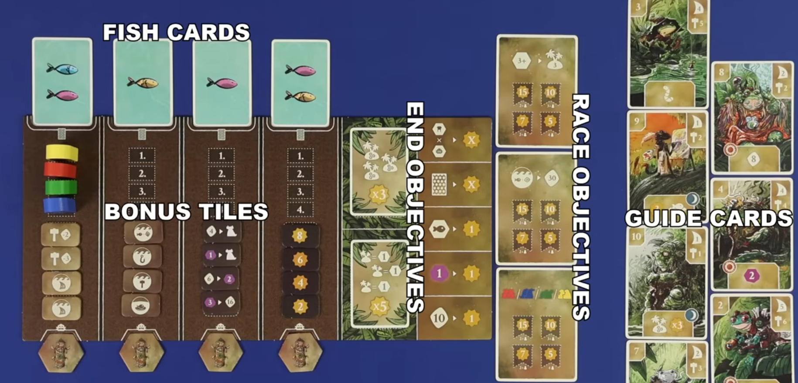
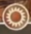
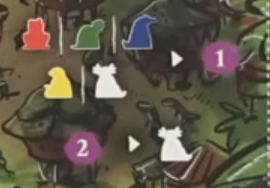
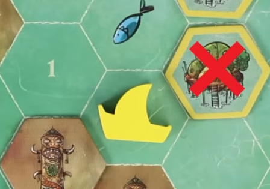
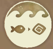
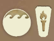
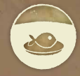

Feya's Swamp
Overview
We're clans of swamp critters striving to be the most prosperous.
We'll be doing worker placement to sail around and develop the swamp.
- Bulding settlements costs gold and removes them from your board, unlocking your clans strengths and abilities
- Moving your ships around to fish
- Trading fish to other settlements, which get you gold, but them points
There's a side of the boards that are all the same, or a side with some asymmetry
Big concepts
Islands
The brown icons on the board are spirit tiles, which mark the beginning of islands.
- As we add settlements and more spirit tiles to the board, we'll build out the islands
- We can never join the islands together, so there will always be as many islands as we start the game with
Shared board

Setup steps
- In a setup turn order we'll draft guide cards for the first round, adding a fish to each that wasn't chosen.
- We'll look at the initiative number in the top left of the drafted cards, lowest to highest will be turn oerder (low first)
- In that order we'll take turns placing one starting settlement until we've all placed 3
- These are the ones marked with darker boarders on your playerboard
- On turns wher you place a settlement tile with a boat, also place the boat out on the tile
- Each starting settlment must be placed adjacent to at least 1 spirit
- Each of your starting settlements must go on a different island
Round overview
Game plays over 4 rounds, each round has 3 phases: Income, turns, and maintenance
Income
Players gain any income, denoted by spaces with this icon:

- From spaces on playerboard unlocked by built settlements
- From guide card
Turns
Here you'll be placing a worker out on an empty slot on the board and taking an action
Some action spaces have extra things
- Starbursts are points
- purple circles cost you mana (purple rocks) to go to
The main use for mana is for placing on action spaces. There are also 2 free actions you can take on your turn in addition to your main placement action

- Placing a worker to gain a mana
- Paying two mana to get a neutral worker that you can place like a normal worker
Actions are broken down into 2 major categories
- Boat actions that show a wave on their icon
- Ground actions which don't
Boat actions
- Taking a boat action allows you to take the action once for each boat that you have on the board
- A boat action is taken in the location where the boat token is
- Before taking an action, you may move your boat up to your sailing value
- Sailing value on top right of guide card plus
- Sailing value on playerboard track (in the center)
- Since your boats start in settlements, its first movement will move it into the water
- Subsequent moves must be through adjacent water spaces
- You can move through other boats, but can't end on a space with a boat in it
- You can only move your boat if you take the action. Since your action happens where your boat is, you have to move to a spot legal to do the chosen action, or else the boat doesn't move at all.
Build settlement
- Each boat can sail, and then build a settlement adjacent to its destination
- Take the leftmost settlement token from any of your 4 settlement rows on your playerboard
- The settlement must be placed in an empty hex adjacent to the boat, and as part of an island which the boat is already adjacent to
- You can't join islands together, they must always stay separated
- You can't close off a temple space or another player's boat from the rest of the swamp (no trapping people)
- Pay an amount of gold to build the settlement equal to
- the hammer cost on the top right of the guide card
- plus 3 for each spirit on the island you're extending
- The settlement you've build could get you an extra meeple that is now available, a passive bonus, or an income bonus you'll start to earn

Fishing
- Count the number of worm symbols you've unlocked on your playerboad (top left)
- Check the in season fish colors for the current round
- (This is shown on the card above the round tracker where all the meeples are)
- Each of your boats that can finish it's sail on a fish of an in season fish color gains you one fish per worm symbol
Trade

- After sailing, each boat can trade fish from your supply with adjacent settlements
- Place traded fish onto the tiles where you trade, up to a maximum of 3 fish
- Trading with opponents earns you gold
- First fish on a pile earns 4 gold, 2nd fish gains 3, third fish gains 2
- You can't stack higher than 3, but a boat can trade with multiple settlements if it is adjacent to more than one
- Putting fish on your own settlement will not earn you gold. Each fish placed on a player's owned settlements will eventually get them points when settlements eat the fish through a different action
Sail

- Sail each of your boats around the board with their usual range (with a +2 range in a 3/4 player game)
- This is the only way to move your boats without having to take an action at the boat's destination
- This is also the only action that allows you to visit temples (the torch symbol)
- Temples are the spaces with the black torch tokens along the outside of the board
- Multiple people can share the space of a temple, but when you enter one your movement ends immediately
- Gain the top temple tile from the pile as long as you don't already have one from that temple (indicated by symbol on back of tile and top of temple space)
- Immediately gain the bonuses on each tile you earn
Ground actions
Unlike boat actions, these are all resolved only once, and none are location dependant
Celebrate

This is how the settlements eat the fish
- Choose any single island containing at least one traded fish (so a settlement with a fish on it)
- Gain one point for every settlement on that island containing at least one fish (regardless of settlement owner)
- Each settlement owner gets one point per fish removed from one of their tiles
- Remove all fish from all settlements on that island
- Since settlements can never have more than 3 fish on them, this action is what resets islands for future trading
Improve sailing

- Move your sailing marker on your playerboard up one step
- Immediately gain the points covered up
Add spirit worship
- Only one player can take this action per round
- Take a spirit tile from the stack and add it to any island
- It doesn't need to be adjacent to a boat of yours, but otherwise follows same placement rules as settlements
- The first time this action is performed, add the totem token to the island that you just extended
- Any subsequent time that a spirit tile is placed, move the totem to the new island
- While the totem is present:
- Every fish traded with an opponents settlement is worth one extra gold
- Any player taking the celebration action gains a bonus 3 points when scoring that island
- You can never add a spirit tile to the island with the totem.
Passing
If you can't or don't want to take an action, you pass
- Take a round bonus token from the current round
- Most of the time these are one time use actions or benefits that you can spend for it's benefit during your turn in addition to your worker placement
- In the final round these are just worth points
- If your guide card has a passing effect (represented by the moon icon on the bottom box), resolve it
- Return your guide to the guide offer row, and choose a different one from those available. That will be your guide card for the next round
- The last player to pass also places a spirit tile, following the same rules as the spirit worship action
Maintenance phase
Once everyone has passed, we go to the maintenance phase
- Flip over the current round's fish card
- Arrange the turn order meeples according to the initiative of the guide cards that players took (lowest number is higher in turn order)
- Everyone retrieves their player color workers
- Return neutral workers to the supply
- Add a fish to each unchosen guide
Scoring
We've talked about ways to get points througout the game, but there are also 3 public objectives that we're racing for
- At the end of each of your turns, you check for objective completion
- Whenever you meet one, put your flag marker on the highest available point total and then gain the points immediately
End game scoring after round 4: (there is a reminder for this along the edge of the shared board)
- Each of your settlements scores points equal to the number of spirit tiles on it's island
- Score points for the 2 end game scoring cards
- These are all settlement placement objectives
- Score 1 point for each fish left on one of your settlements
- Score one point for each left over mana
- Each left over gold is worth one point